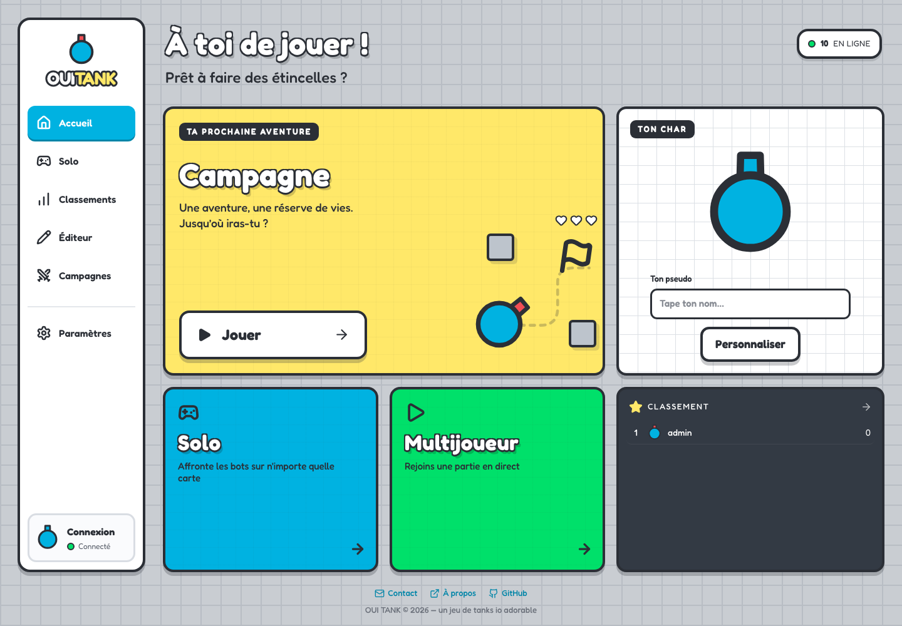
Fewer than 100 connected players: the yellow campaign card takes the lead.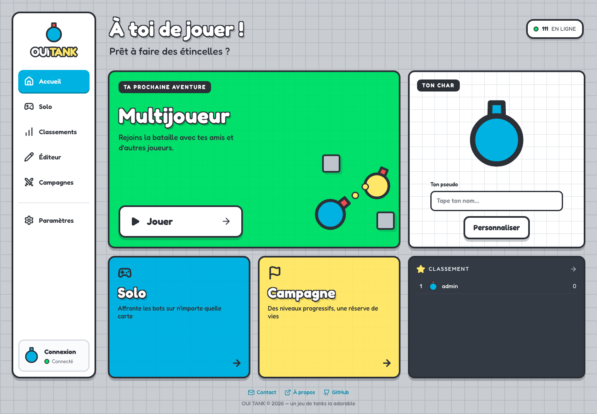
100 or more connected players: multiplayer moves into the green feature card.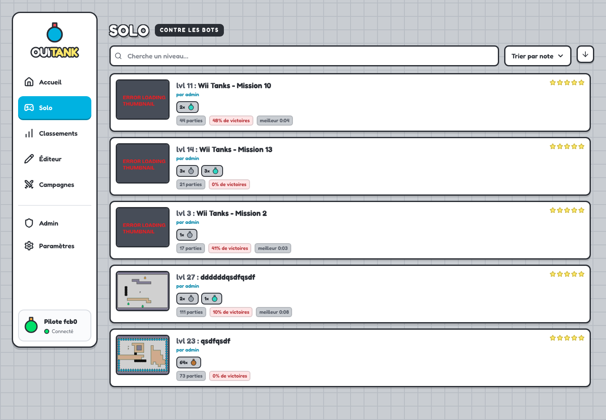
Existing solo browser with the shared sidebar.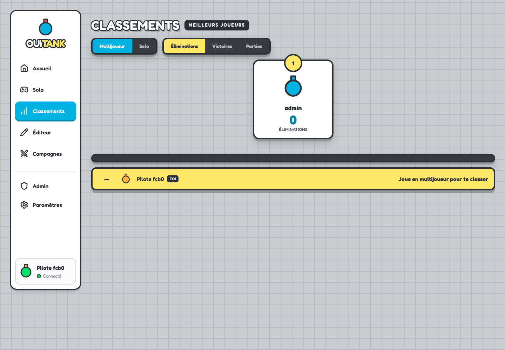
Existing rankings page with the shared sidebar.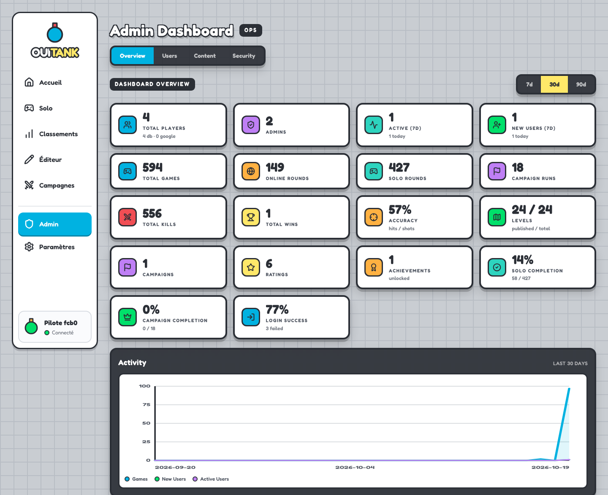
Existing dashboard with the shared sidebar.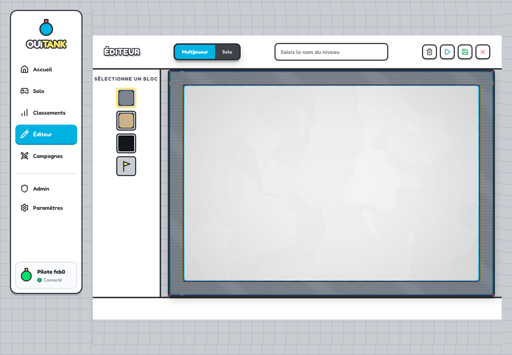
Existing editor fitted into the space beside the sidebar.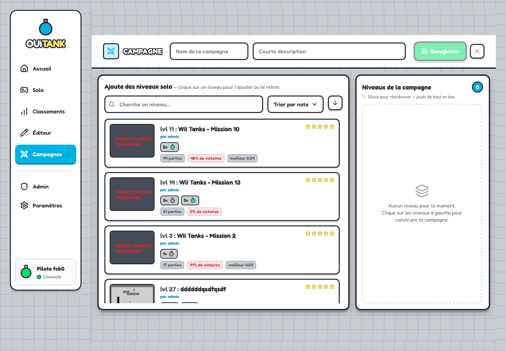
Existing campaign editor with the shared sidebar.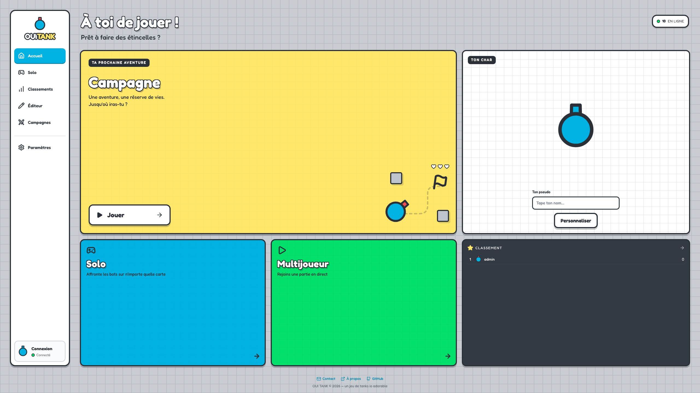
The home fills the available space, with the footer centered across the full page at the bottom.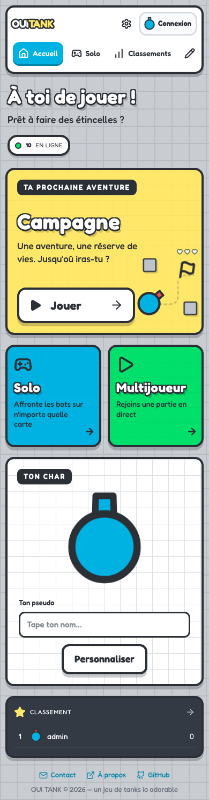
Compact, scrollable navigation and a stacked home layout at 390px.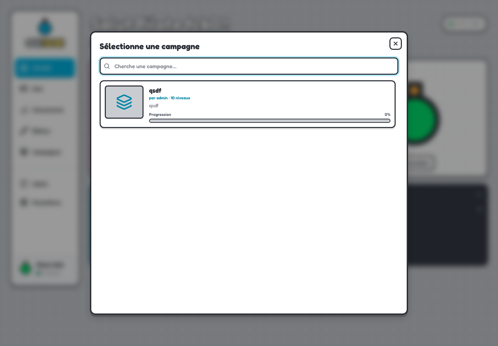
The featured campaign card opens the existing campaign selector.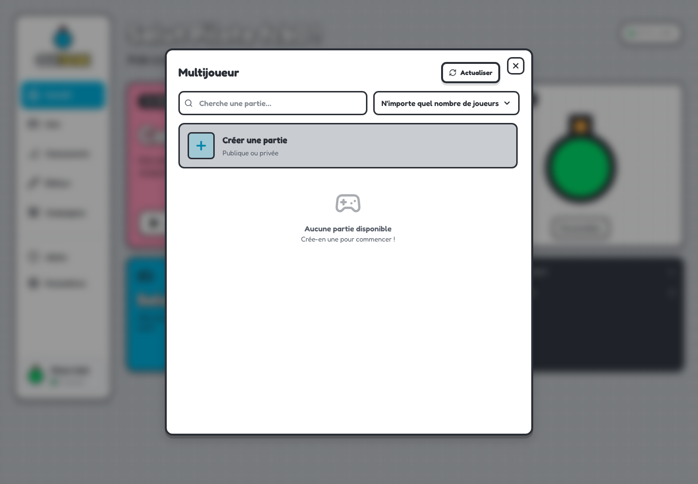
Multiplayer remains available through its secondary card.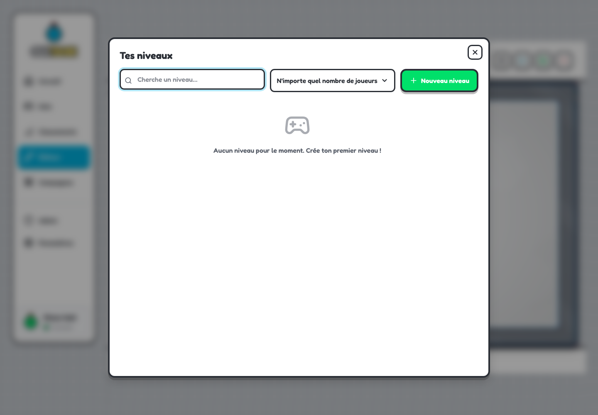
The sidebar opens the existing level manager, including from an editor.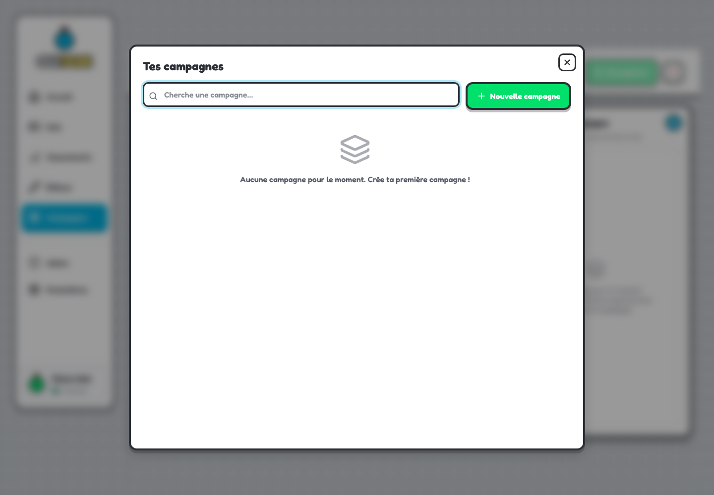
The sidebar opens the existing campaign manager.